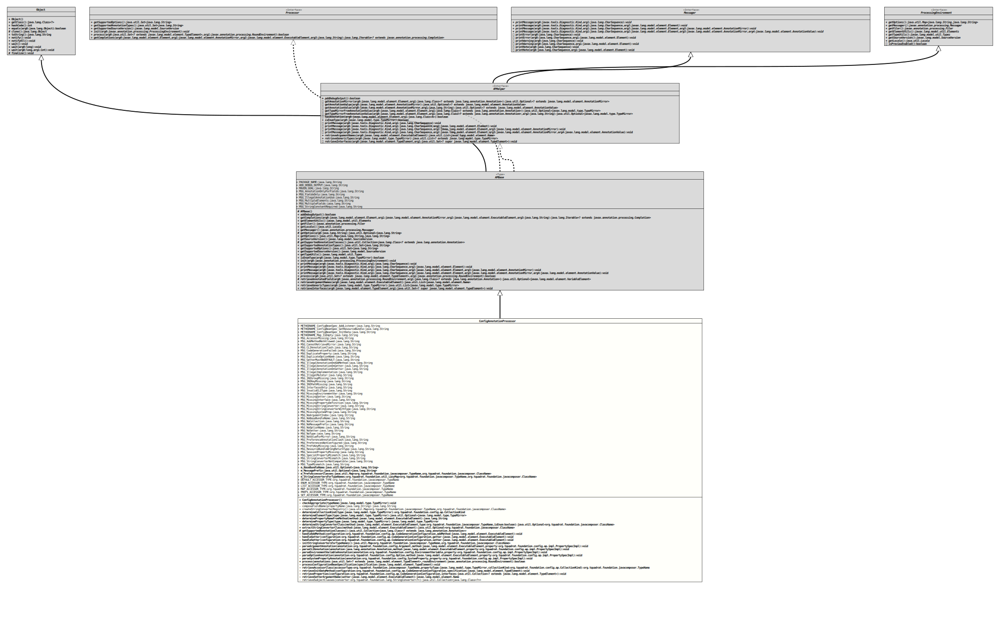

Class ConfigAnnotationProcessor
- All Implemented Interfaces:
Messager,ProcessingEnvironment,Processor,APHelper
org.tquadrat.foundation.config
module.- Author:
- Thomas Thrien (thomas.thrien@tquadrat.org)
- Version:
- $Id: ConfigAnnotationProcessor.java 1105 2024-02-28 12:58:46Z tquadrat $
- Since:
- 0.1.0
- UML Diagram
-

UML Diagram for "org.tquadrat.foundation.config.ap.ConfigAnnotationProcessor"
{kind=link}
-
Field Summary
FieldsModifier and TypeFieldDescriptionstatic final TypeNameThe type name for the classSimplePreferenceAccessor.static final TypeNameThe type name for the classEnumAccessor.static final TypeNameThe type name for the classListAccessor.The base bundle name.The message prefix.The preferences accessor classes.A map ofStringConverterimplementations that use instances ofTypeNameas keys.static final TypeNameThe type name for the classMapAccessor.static final StringThe name forConfigBeanSpec.addListener(org.tquadrat.foundation.config.ConfigurationChangeListener): "addListener".static final StringThe name forConfigBeanSpec.getResourceBundle(): "getResourceBundle".static final StringThe name for the optionalinitDatamethod: "initData".static final StringThe name forMap.isEmpty(): "isEmpty".static final StringThe message that indicates that no accessor class is given for the@SystemPreferenceannotation: "No accessor is given for the @SystemPreference annotation on \'%1$s\'".static final StringThe message that indicates the erroneous attempt to define an 'add' method for a property that is not a collection.static final StringThe message that indicates that a mirror cannot be retrieved: "Cannot retrieve Mirror for \'%1$s\'".static final StringThe message that indicates a clash of CLI annotations.static final StringThe message that indicates the failure of the code generation for the configuration bean specification: "Code generation for \'%1$s.%2$s\' failed".static final StringThe message that indicates that an option name was used twice: "Option name \'%s\' for property \'%s\' is already used".static final StringThe message that indicates that a property was specified twice: "Duplicate property: %1$s".static final StringThe message that indicates a missing default getter for the message prefix: "The getter for the message prefix must be defined as default".static final StringThe message that indicates that an illegal annotation had been applied to an 'add' method: "Invalid annotation \'%1$s\' on \'add\' method \'%2$s\'".static final StringThe message that indicates that an illegal annotation had been applied to a getter: "Invalid annotation \'%1$s\' on getter \'%2$s\'".static final StringThe message that indicates that an illegal annotation had been applied to a setter: "Illegal annotation \'%1$s\' on setter \'%2$s\'".static final StringThe message that indicates that an invalid implementation for an interface was used: "Illegal implementation for \'%1$s\': %2$s".static final StringThe message that indicates that a mutator was provided for an immutable property: "No mutator allowed for property \'%1$s\'".static final StringThe message that indicates that the attributeINIValue.group()was not properly populated: "The group for @INIValue on \'%s\' is missing".static final StringThe message that indicates that the attributeINIValue.key()was not properly populated: "The key for @INIValue on \'%s\' is missing".static final StringThe message that indicates that the attributeINIFileConfig.path()was not properly populated: "The path for @INIFileConfig is not set properly".static final StringThe message that indicates that an annotation is valid only for interfaces: "Only allowed for interfaces".static final StringThe message that indicates that a CLI property is invalid: "Property \'%s\' is neither argument nor option".static final StringThe message that indicates a missing environment variable name for a property: "The name of the environment variable is missing for property \'%1$s\'".static final StringThe message that indicates a missing getter for a property: "A getter method for the property \'%1$s\' is missing".static final StringThe message that indicates that the configuration bean specification does not extendConfigBeanSpec: "The configuration bean specification \'%1$s\' does not extend \'%2$s\'".static final StringThe message that indicates a missing definition for a property: "There is neither a getter nor a setter method for the property \'%1$s\', first introduced by the \'add\' method \'%2$s\'".static final StringThe message that indicates a missingStringConverterfor a property: "There is no StringConverter for the property \'%1$s\'".static final StringThe message that indicates a missingStringConverterfor a property: "There is no StringConverter for the property \'%1$s\' than converts \'%2$s\'".static final StringThe message that indicates a missing system property name for a property: "The name of the system property is missing for property \'%1$s\'".static final StringThe message that indicates a missing argument index for a CLI argument property: "No argument index for property \'%s\'".static final StringThe message that indicates a missing base bundle name configuration: "There is no public static field providing the base bundle name".static final StringThe message that indicates that an 'add' method was provided for a non-collection property.static final StringThe message that indicates a missing message prefix field: "There is no public static field providing the message prefix".static final StringThe message that indicates a missing property name for a CLI option property: "No option name for property \'%s\'".static final StringThe message that indicates that a given method is not a setter: "The method \'%1$s\' is neither a setter nor an add method".static final StringThe message that indicates a missing property type.static final StringThe message that indicates that a value cannot be retrieved from a mirror: "Cannot get value for \'%2$s\' from Annotation Mirror for \'%1$s\'".static final StringThe message that indicates a clash of preference annotations: "Annotations @Preference and @NoPreference are mutually exclusive".static final StringThe message that indicates invalid "preferences" configuration for a property: "The \'preferences\' configuration for \'%1$s\' is invalid".static final StringThe message that indicates that noPreferenceskey is given for the@SystemPreferenceannotation: "No key is given for the @SystemPreference annotation on \'%1$s\'".static final StringThe message that indicates a wrong return type forConfigBeanSpec.getResourceBundle(): "The return type of getResourceBundle() must be Optional(ResourceBundle)".static final StringThe message that indicates that the session property was not defined: "Session property was not defined".static final StringThe message that indicates a mismatch of the values for the@SpecialPropertyannotation: "%1$s annotation value for \'%2$s\' is \'%3$s\', but \'%4$s\' was expected".static final StringThe message that indicates that theStringConverterinferred from the setter does not match with that from the getter.static final StringThe message that indicates that theStringConverteris invalid for the property type.static final StringThe message that indicates a mismatch of the types for the setter argument and the property itself: "Parameter type \'%1$s\' of setter \'%2$s\' does not match with property type \'%3$s\'".static final TypeNameThe type name for the classPreferenceAccessor.static final TypeNameThe type name for the classSetAccessor.Fields inherited from class org.tquadrat.foundation.ap.APBase
ADD_DEBUG_OUTPUT, MAVEN_GOAL, MSG_AnnotationOnlyForFields, MSG_FieldsOnly, MSG_IllegalAnnotationUse, MSG_MultipleElements, MSG_MultipleFields, MSG_StringConstantRequired, PACKAGE_NAME -
Constructor Summary
ConstructorsConstructorDescriptionCreates a newConfigAnnotationProcessorinstance. -
Method Summary
Modifier and TypeMethodDescriptionprivate final voidcheckAppropriate(TypeMirror typeName) Checks whether the given type is inappropriate for a configuration bean property and therefore deserves that anInappropriateTypeErroris thrown.private static final StringcomposeFieldName(String propertyName) Composes the name of the field from the given property name.Creates a registry of the knownStringConverterimplementations.private final CollectionKindDetermines whether the giventypeis a collection of some type and returns the respective kind.private final Optional<TypeMirror> Determines the element type from the givenTypeMirrorinstance representing a collection.private final StringRetrieves the name of the property from the name of the given executable element for a method that is either a getter, a setter or an 'add' method.private final TypeMirrorDetermines the property type from the givenTypeMirrorinstance.determineStringConverterClass(ExecutableElement method, TypeName type, boolean isEnum) Determines the implementation ofStringConverterthat can translate a String into an instance of the given type and vice-versa.Retrieves the value for the@StringConversionannotation from the given method.protected final Collection<Class<? extends Annotation>> private final voidhandleAddMethod(CodeGenerationConfiguration configuration, ExecutableElement addMethod) Processes the givenExecutableElementinstance for an 'add' method.private final voidhandleGetter(CodeGenerationConfiguration configuration, ExecutableElement getter) Processes the givenExecutableElementinstance for a getter method.private final voidhandleSetter(CodeGenerationConfiguration configuration, ExecutableElement setter) Processes the givenExecutableElementinstance for a setter method.Initialises the internal attributem_StringConvertersForTypeNames.private final voidparseArgumentAnnotation(Argument annotation, ExecutableElement method, PropertySpecImpl property) Parses the given annotation and updates the given property accordingly.private final voidparseCLIAnnotation(Annotation annotation, ExecutableElement method, PropertySpecImpl property) Parses the given CLI annotation and updates the given property accordingly.private final voidparseEnvironmentVariableAnnotation(EnvironmentVariable annotation, PropertySpecImpl property) Parses the given annotation and updates the given property accordingly.private final voidparseOptionAnnotation(Option annotation, ExecutableElement method, PropertySpecImpl property) Parses the given annotation and updates the given property accordingly.private final voidparseSystemPropertyAnnotation(SystemProperty annotation, PropertySpecImpl property) Parses the given annotation and updates the given property accordingly.final booleanprocess(Set<? extends TypeElement> annotations, RoundEnvironment roundEnvironment) private final voidprocessConfigurationBeanSpecification(TypeElement specification) Processes the given configuration bean specification and generates the source for the so specified configuration bean.private final TypeNameretrieveAccessorClass(TypeName accessorType, TypeMirror propertyType, CollectionKind collectionKind) Retrieves the class for the preference accessor.private final voidretrieveInitDataMethod(CodeGenerationConfiguration configuration, TypeElement specification) This methods checks whether the configuration bean specification specifies aninitData()method.private final voidretrieveProperties(CodeGenerationConfiguration configuration, Collection<? extends TypeElement> interfaces) Scans the configuration bean specification for the properties and stores the result to the configuration.private final NameRetrieves the name of the single argument of a setter method.private static final Collection<Class<?>> retrieveSubjectClasses(StringConverter<?> converter) Determines the key class for the given instance ofStringConverter.Methods inherited from class org.tquadrat.foundation.ap.APBase
addDebugOutput, getCompletions, getElementUtils, getFiler, getLocale, getMessager, getOption, getOptions, getSourceVersion, getSupportedAnnotationTypes, getSupportedOptions, getSupportedSourceVersion, getTypeUtils, init, isEnumType, printMessage, printMessage, printMessage, printMessage, retrieveAnnotatedField, retrieveArgumentNames, retrieveGenericTypes, retrieveInterfacesMethods inherited from class java.lang.Object
clone, equals, finalize, getClass, hashCode, notify, notifyAll, toString, wait, wait, waitMethods inherited from interface org.tquadrat.foundation.ap.APHelper
getAnnotationMirror, getAnnotationValue, getAnnotationValue, getTypeMirrorFromAnnotationValue, getTypeMirrorFromAnnotationValue, hasAnnotationMethods inherited from interface javax.annotation.processing.Messager
printError, printError, printNote, printNote, printWarning, printWarningMethods inherited from interface javax.annotation.processing.ProcessingEnvironment
isPreviewEnabled
-
Field Details
-
METHODNAME_ConfigBeanSpec_AddListener
The name forConfigBeanSpec.addListener(org.tquadrat.foundation.config.ConfigurationChangeListener): "addListener".- See Also:
-
METHODNAME_ConfigBeanSpec_GetResourceBundle
The name forConfigBeanSpec.getResourceBundle(): "getResourceBundle".- See Also:
-
METHODNAME_ConfigBeanSpec_InitData
The name for the optionalinitDatamethod: "initData".- See Also:
-
METHODNAME_Map_IsEmpty
The name forMap.isEmpty(): "isEmpty".- See Also:
-
MSG_AccessorMissing
The message that indicates that no accessor class is given for the@SystemPreferenceannotation: "No accessor is given for the @SystemPreference annotation on \'%1$s\'".- See Also:
-
MSG_AddMethodNotAllowed
The message that indicates the erroneous attempt to define an 'add' method for a property that is not a collection.- See Also:
-
MSG_CannotRetrieveMirror
The message that indicates that a mirror cannot be retrieved: "Cannot retrieve Mirror for \'%1$s\'".- See Also:
-
MSG_CLIAnnotationClash
The message that indicates a clash of CLI annotations.- See Also:
-
MSG_CodeGenerationFailed
The message that indicates the failure of the code generation for the configuration bean specification: "Code generation for \'%1$s.%2$s\' failed".- See Also:
-
MSG_DuplicateProperty
The message that indicates that a property was specified twice: "Duplicate property: %1$s".- See Also:
-
MSG_DuplicateOptionName
The message that indicates that an option name was used twice: "Option name \'%s\' for property \'%s\' is already used".- See Also:
-
MSG_GetterMustBeDEFAULT
The message that indicates a missing default getter for the message prefix: "The getter for the message prefix must be defined as default".- See Also:
-
MSG_IllegalAnnotationOnAddMethod
The message that indicates that an illegal annotation had been applied to an 'add' method: "Invalid annotation \'%1$s\' on \'add\' method \'%2$s\'".- See Also:
-
MSG_IllegalAnnotationOnGetter
The message that indicates that an illegal annotation had been applied to a getter: "Invalid annotation \'%1$s\' on getter \'%2$s\'".- See Also:
-
MSG_IllegalAnnotationOnSetter
The message that indicates that an illegal annotation had been applied to a setter: "Illegal annotation \'%1$s\' on setter \'%2$s\'".- See Also:
-
MSG_IllegalImplementation
The message that indicates that an invalid implementation for an interface was used: "Illegal implementation for \'%1$s\': %2$s".- See Also:
-
MSG_IllegalMutator
The message that indicates that a mutator was provided for an immutable property: "No mutator allowed for property \'%1$s\'".- See Also:
-
MSG_INIGroupMissing
The message that indicates that the attributeINIValue.group()was not properly populated: "The group for @INIValue on \'%s\' is missing".- See Also:
-
MSG_INIKeyMissing
The message that indicates that the attributeINIValue.key()was not properly populated: "The key for @INIValue on \'%s\' is missing".- See Also:
-
MSG_INIPathMissing
The message that indicates that the attributeINIFileConfig.path()was not properly populated: "The path for @INIFileConfig is not set properly".- See Also:
-
MSG_InterfacesOnly
The message that indicates that an annotation is valid only for interfaces: "Only allowed for interfaces".- See Also:
-
MSG_InvalidCLIType
The message that indicates that a CLI property is invalid: "Property \'%s\' is neither argument nor option".- See Also:
-
MSG_MissingEnvironmentVar
The message that indicates a missing environment variable name for a property: "The name of the environment variable is missing for property \'%1$s\'".- See Also:
-
MSG_MissingGetter
The message that indicates a missing getter for a property: "A getter method for the property \'%1$s\' is missing".- See Also:
-
MSG_MissingInterface
The message that indicates that the configuration bean specification does not extendConfigBeanSpec: "The configuration bean specification \'%1$s\' does not extend \'%2$s\'".- See Also:
-
MSG_MissingPropertyDefinition
The message that indicates a missing definition for a property: "There is neither a getter nor a setter method for the property \'%1$s\', first introduced by the \'add\' method \'%2$s\'".- See Also:
-
MSG_MissingStringConverter
The message that indicates a missingStringConverterfor a property: "There is no StringConverter for the property \'%1$s\'".- See Also:
-
MSG_MissingStringConverterWithType
The message that indicates a missingStringConverterfor a property: "There is no StringConverter for the property \'%1$s\' than converts \'%2$s\'".- See Also:
-
MSG_MissingSystemProp
The message that indicates a missing system property name for a property: "The name of the system property is missing for property \'%1$s\'".- See Also:
-
MSG_NoArgumentIndex
The message that indicates a missing argument index for a CLI argument property: "No argument index for property \'%s\'".- See Also:
-
MSG_NoBaseBundleName
The message that indicates a missing base bundle name configuration: "There is no public static field providing the base bundle name".- See Also:
-
MSG_NoCollection
The message that indicates that an 'add' method was provided for a non-collection property.- See Also:
-
MSG_NoMessagePrefix
The message that indicates a missing message prefix field: "There is no public static field providing the message prefix".- See Also:
-
MSG_NoOptionName
The message that indicates a missing property name for a CLI option property: "No option name for property \'%s\'".- See Also:
-
MSG_NoSetter
The message that indicates that a given method is not a setter: "The method \'%1$s\' is neither a setter nor an add method".- See Also:
-
MSG_NoType
The message that indicates a missing property type.- See Also:
-
MSG_NoValueForMirror
The message that indicates that a value cannot be retrieved from a mirror: "Cannot get value for \'%2$s\' from Annotation Mirror for \'%1$s\'".- See Also:
-
MSG_PreferenceAnnotationClash
The message that indicates a clash of preference annotations: "Annotations @Preference and @NoPreference are mutually exclusive".- See Also:
-
MSG_PreferencesNotConfigured
The message that indicates invalid "preferences" configuration for a property: "The \'preferences\' configuration for \'%1$s\' is invalid".- See Also:
-
MSG_PrefsKeyMissing
The message that indicates that noPreferenceskey is given for the@SystemPreferenceannotation: "No key is given for the @SystemPreference annotation on \'%1$s\'".- See Also:
-
MSG_ResourceBundleWrongReturnType
The message that indicates a wrong return type forConfigBeanSpec.getResourceBundle(): "The return type of getResourceBundle() must be Optional(ResourceBundle)".- See Also:
-
MSG_SessionPropertyMissing
The message that indicates that the session property was not defined: "Session property was not defined".- See Also:
-
MSG_SpecialPropertyMismatch
The message that indicates a mismatch of the values for the@SpecialPropertyannotation: "%1$s annotation value for \'%2$s\' is \'%3$s\', but \'%4$s\' was expected".- See Also:
-
MSG_StringConverterMismatch
The message that indicates that theStringConverterinferred from the setter does not match with that from the getter.- See Also:
-
MSG_StringConverterNotCompatible
The message that indicates that theStringConverteris invalid for the property type.- See Also:
-
MSG_TypeMismatch
The message that indicates a mismatch of the types for the setter argument and the property itself: "Parameter type \'%1$s\' of setter \'%2$s\' does not match with property type \'%3$s\'".- See Also:
-
m_BaseBundleName
The base bundle name. The value will be set in
process(Set, RoundEnvironment)from a String constant that is annotated with the annotation@BaseBundleName. -
m_MessagePrefix
The message prefix. The value will be set in
process(Set, RoundEnvironment)from a String constant that is annotated with the annotation@MessagePrefix. -
m_PrefsAccessorClasses
The preferences accessor classes. -
m_StringConvertersForTypeNames
A map ofStringConverterimplementations that use instances ofTypeNameas keys. -
DEFAULT_ACCESSOR_TYPE
The type name for the classSimplePreferenceAccessor. -
ENUM_ACCESSOR_TYPE
The type name for the classEnumAccessor. -
LIST_ACCESSOR_TYPE
The type name for the classListAccessor. -
MAP_ACCESSOR_TYPE
The type name for the classMapAccessor. -
PREFS_ACCESSOR_TYPE
The type name for the classPreferenceAccessor. -
SET_ACCESSOR_TYPE
The type name for the classSetAccessor.
-
-
Constructor Details
-
ConfigAnnotationProcessor
public ConfigAnnotationProcessor()Creates a newConfigAnnotationProcessorinstance.
-
-
Method Details
-
checkAppropriate
Checks whether the given type is inappropriate for a configuration bean property and therefore deserves that anInappropriateTypeErroris thrown.- Parameters:
typeName- The type to check.- Throws:
InappropriateTypeError- The given type may not be chosen for a configuration bean property.- See Also:
-
composeFieldName
Composes the name of the field from the given property name.
- Parameters:
propertyName- The name of the property.- Returns:
- The name of the field.
-
createStringConverterRegistry
@API(status=INTERNAL, since="0.1.0") public static final Map<TypeName,ClassName> createStringConverterRegistry() throws IOExceptionCreates a registry of the known
StringConverterimplementations.The
TypeNameof the subject class is the key for that map, theTypeNamefor theClassimplementing theStringConverteris the value.- Returns:
- An immutable map of
StringConverterimplementations. - Throws:
IOException- Failed to read the resource files with theStringConverterimplementations.
-
determineCollectionKind
Determines whether the giventypeis a collection of some type and returns the respective kind.- Parameters:
type- The type to check.- Returns:
- The collection kind.
-
determineElementType
Determines the element type from the given
TypeMirrorinstance representing a collection.- Parameters:
type- The type.- Returns:
- An instance of
Optionalthat holds the element type.
-
determinePropertyNameFromMethod
Retrieves the name of the property from the name of the given executable element for a method that is either a getter, a setter or an 'add' method.
Alternatively the method has an annotation that provides the name of the property.
- Parameters:
method- The method.- Returns:
- The name of the property.
- See Also:
-
determinePropertyType
Determines the property type from the given
TypeMirrorinstance. This is either the return type of a getter or the argument type of a setter.Usually the property type will be the respective
TypeMirrorfor the given type as is, only in case ofOptional, it will be the parameter type.- Parameters:
type- The type.- Returns:
- The property type.
-
determineStringConverterClass
private final Optional<ClassName> determineStringConverterClass(ExecutableElement method, TypeName type, boolean isEnum) Determines the implementation ofStringConverterthat can translate a String into an instance of the given type and vice-versa.- Parameters:
method- The annotated method; it is only used to get the instance of@StringConversionfrom it.type- The target type.isEnum-trueif the target type is anenumtype,falseotherwise.- Returns:
- An instance of
Optionalthat holds the determined class.
-
extractStringConverterClass
Retrieves the value for the
@StringConversionannotation from the given method.The type for the annotation value is an instance of
Class<? extends StringConverter>, so it cannot be retrieved directly. Therefore this method will return theTypeNamefor theStringConverterimplementation class.- Parameters:
method- The annotated method.- Returns:
- An instance of
Optionalholding the type name that represents the annotation value "stringConverter".
-
getSupportedAnnotationClasses
- Specified by:
getSupportedAnnotationClassesin classAPBase
-
handleAddMethod
private final void handleAddMethod(CodeGenerationConfiguration configuration, ExecutableElement addMethod) Processes the givenExecutableElementinstance for an 'add' method.- Parameters:
configuration- The code generation configuration.addMethod- The 'add' method.
-
handleGetter
private final void handleGetter(CodeGenerationConfiguration configuration, ExecutableElement getter) Processes the givenExecutableElementinstance for a getter method.- Parameters:
configuration- The code generation configuration.getter- The getter method.
-
handleSetter
private final void handleSetter(CodeGenerationConfiguration configuration, ExecutableElement setter) Processes the givenExecutableElementinstance for a setter method.- Parameters:
configuration- The code generation configuration.setter- The setter method.
-
initStringConvertersForTypeNames
@API(status=INTERNAL, since="0.1.0") private final Map<TypeName,ClassName> initStringConvertersForTypeNames()Initialises the internal attributem_StringConvertersForTypeNames.- Returns:
- The map of
StringConverterimplementations.
-
parseArgumentAnnotation
private final void parseArgumentAnnotation(Argument annotation, ExecutableElement method, PropertySpecImpl property) Parses the given annotation and updates the given property accordingly.- Parameters:
annotation- The annotation.method- The annotated method.property- The property.
-
parseCLIAnnotation
private final void parseCLIAnnotation(Annotation annotation, ExecutableElement method, PropertySpecImpl property) Parses the given CLI annotation and updates the given property accordingly.
annotationmay be only of typeArgumentorOption, although this is not explicitly checked (the method is private!).Usually, the method is only called by the methods
parseArgumentAnnotation(Argument, ExecutableElement, PropertySpecImpl)andparseOptionAnnotation(Option, ExecutableElement, PropertySpecImpl), with the proper arguments.- Parameters:
annotation- The annotation.method- The annotated method.property- The property.
-
parseEnvironmentVariableAnnotation
private final void parseEnvironmentVariableAnnotation(EnvironmentVariable annotation, PropertySpecImpl property) Parses the given annotation and updates the given property accordingly.- Parameters:
annotation- The annotation.property- The property.
-
parseOptionAnnotation
private final void parseOptionAnnotation(Option annotation, ExecutableElement method, PropertySpecImpl property) Parses the given annotation and updates the given property accordingly.- Parameters:
annotation- The annotation.method- The annotated method.property- The property.
-
parseSystemPropertyAnnotation
private final void parseSystemPropertyAnnotation(SystemProperty annotation, PropertySpecImpl property) Parses the given annotation and updates the given property accordingly.- Parameters:
annotation- The annotation.property- The property.
-
process
public final boolean process(Set<? extends TypeElement> annotations, RoundEnvironment roundEnvironment) -
processConfigurationBeanSpecification
private final void processConfigurationBeanSpecification(TypeElement specification) throws IOException Processes the given configuration bean specification and generates the source for the so specified configuration bean.- Parameters:
specification- The specification interface.- Throws:
IOException- A problem occurred when writing the source file.
-
retrieveAccessorClass
@API(status=INTERNAL, since="0.0.1") private final TypeName retrieveAccessorClass(TypeName accessorType, TypeMirror propertyType, CollectionKind collectionKind) throws IllegalAnnotationError Retrieves the class for the preference accessor.- Parameters:
accessorType- The accessor class as defined in the annotation; if this isPreferenceAccessor.class, the effective handler class has to inferred from thepropertyType.propertyType- The type of the property that should be accessed.collectionKind- The kind of collection that is represented by the property type.- Returns:
- The effective accessor class.
- Throws:
IllegalAnnotationError- There is no accessor for the given property type.
-
retrieveInitDataMethod
private final void retrieveInitDataMethod(CodeGenerationConfiguration configuration, TypeElement specification) This methods checks whether the configuration bean specification specifies an
initData()method. This method has to meet the requirements below:- the name has to be "initData"
- it does not take any arguments
- it returns an instance of
Map<String,Object> - it is either
staticordefaultor implemented in a base class, although this is not checked here
Is such a method exists, a
MethodSpecfor it will be created and added to the configuration.- Note:
-
- If a base class for the new configuration bean is defined, the method may be abstract, but if that base class does not implement the method it will be detected only by the final compiler run, not by the code generation here.
- Parameters:
configuration- The configuration for the code generation.specification- The configuration bean specification interface.
-
retrieveProperties
private final void retrieveProperties(CodeGenerationConfiguration configuration, Collection<? extends TypeElement> interfaces) Scans the configuration bean specification for the properties and stores the result to the configuration.
A property is defined primarily by the respective getter method with its annotations, but it is also possible to define it by a setter method only – especially when the configuration bean specification extends the interface
Map.- Parameters:
configuration- The code generation configuration.interfaces- The interfaces that have to implemented by the new configuration bean.
-
retrieveSetterArgumentName
Retrieves the name of the single argument of a setter method.
This method will return the name of the argument as defined in the configuration bean specification if the compiler flag
-parametersis set; otherwise, the arguments are just counted (arg0,arg1,arg2, …).- Parameters:
setter- The setter method.- Returns:
- The name of the argument as defined in the configuration bean specification, or "arg0"
-
retrieveSubjectClasses
Determines the key class for the given instance of
StringConverter.- Note:
-
- This method was copied from
org.tquadrat.foundation.base/org.tquadrat.foundation.lang.internal.StringConverterService.
- This method was copied from
- Parameters:
converter- The converter instance.- Returns:
- The subject class.
-